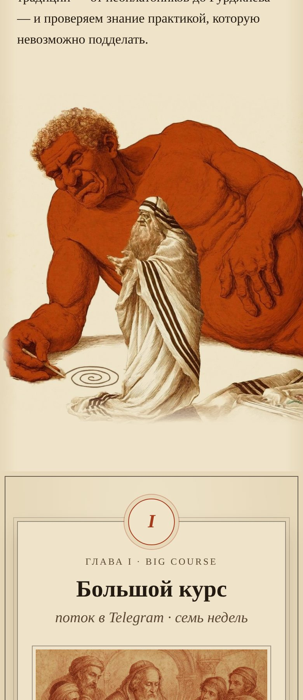
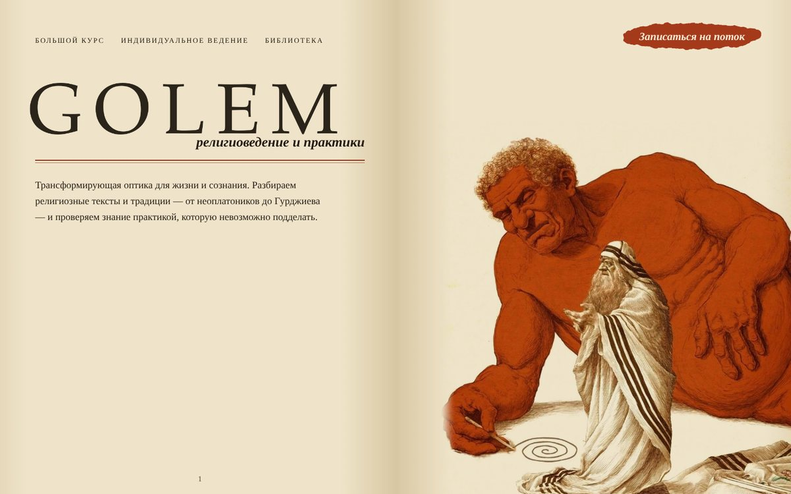
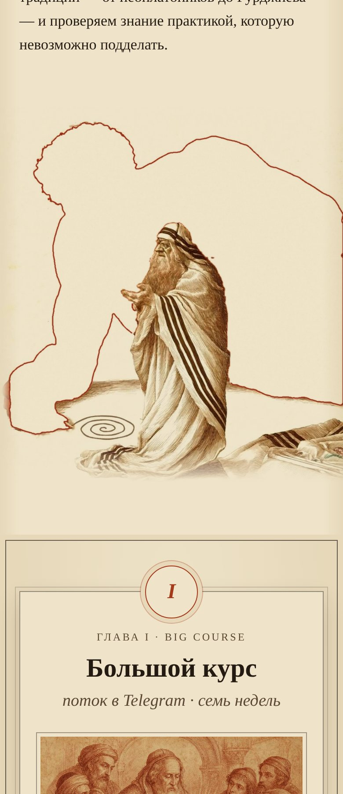
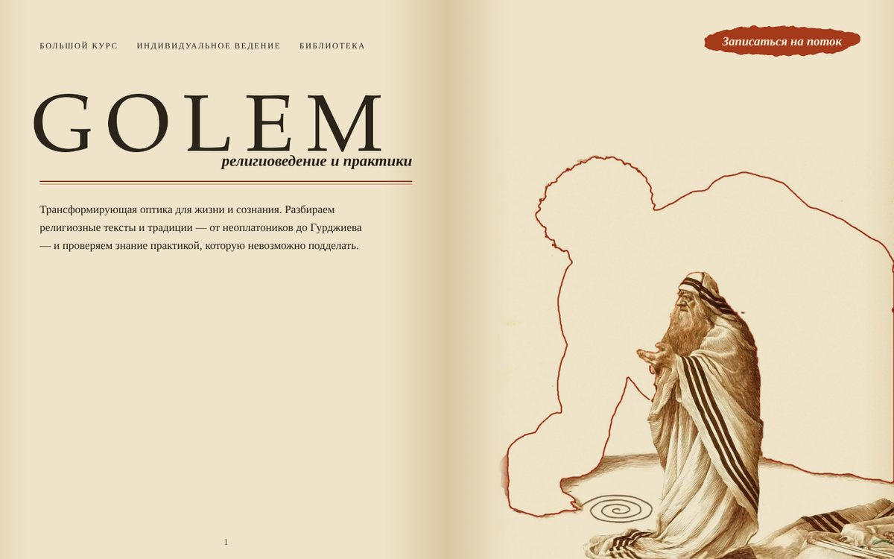
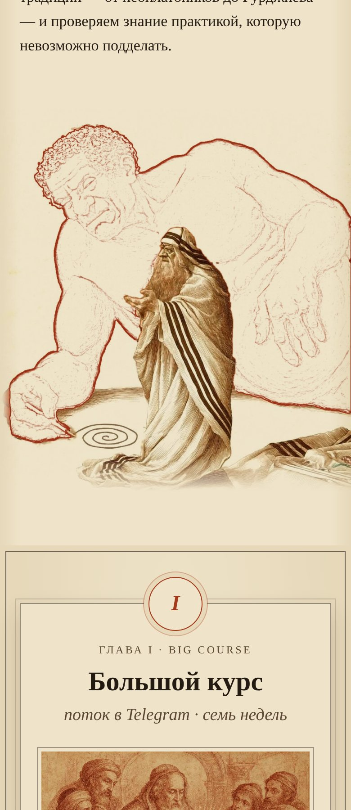
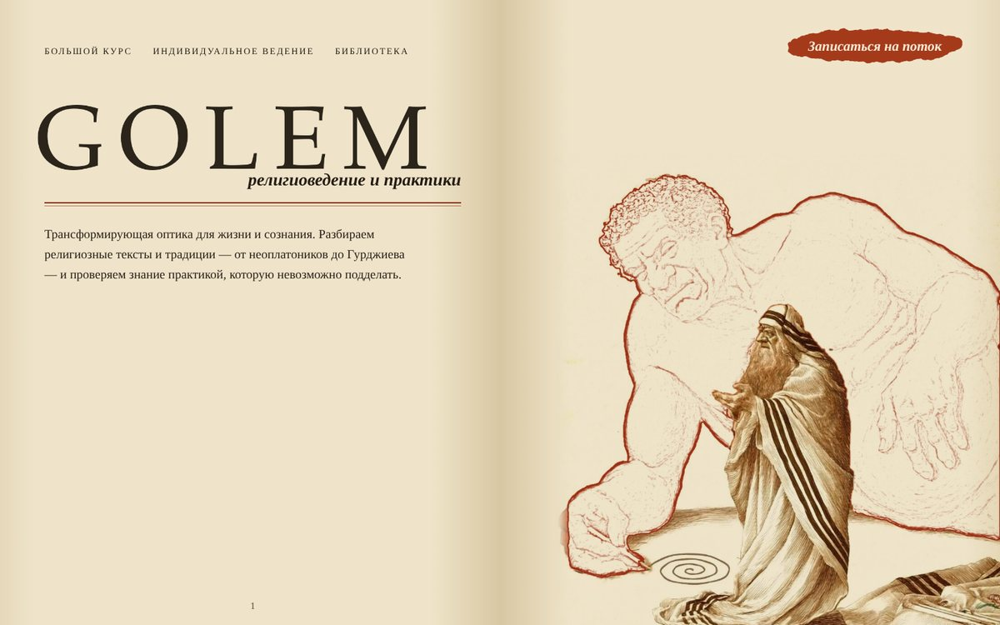
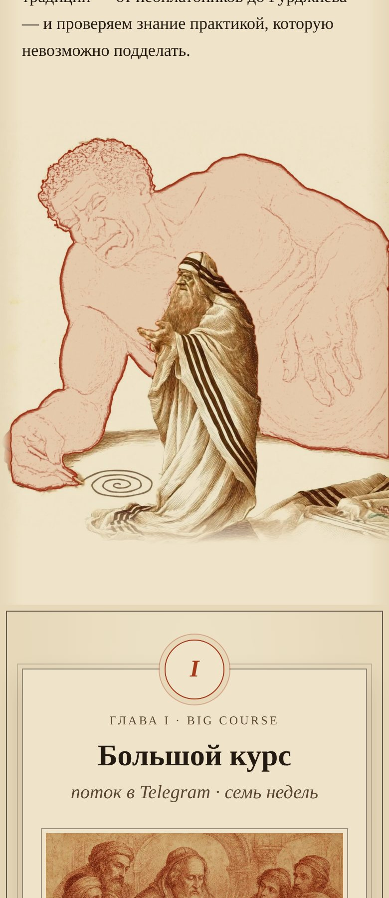
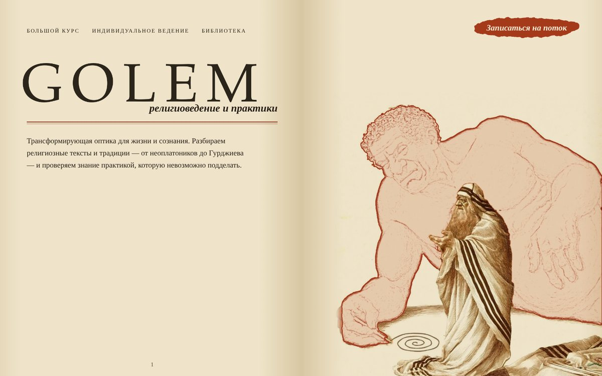
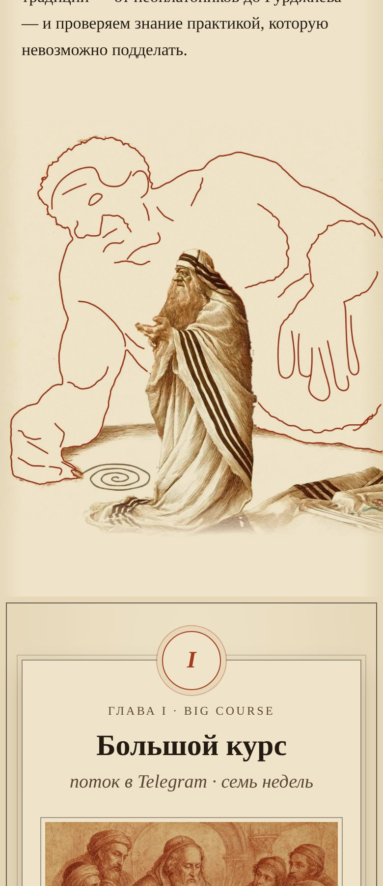
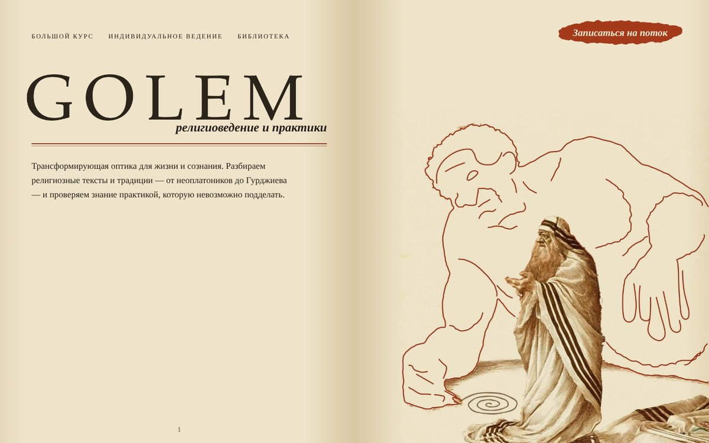

Как выглядит вход на сайт с каждым вариантом голема. Старец везде без изменений. Сначала вид с телефона, ниже — с компьютера.
Как сейчас на сайте.


Красная линия по внешнему краю фигуры, внутри пусто.


Контур и вся штриховка оригинала красным, без заливки.


Как второй, плюс бледно-розовая заливка тела.


Силуэт и настоящие линии рисунка: лицо, ухо, руки, пальцы, грудь, живот. Одна красная линия одинаковой толщины, без штриховки.

